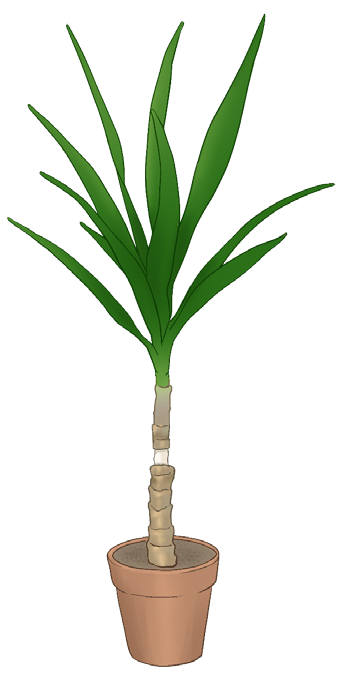

71
Student’s Book - Form Two

Biology for Secondary Schools
(iv) transport of water from the roots to
different parts of the plant through
the xylen.
Activity 3.4: Demonstrate mass flow in plants
Materials
Potted plant and scalpel or knife
Procedure
1.
Remove a ring of bark from the
potted plant as shown in Figure
3.8. The bark contains phloem.
Safety precautions
Observe safety precautions when working with sharp
objects.

ring of bark removed
Figure 3.8: Potted plant with a ring of bark removed
2.
Leave the plant undisturbed for a week.
3.
Observe the plant. What do you
observe in the upper part of the
shoot? Compare your results with
Figure 3.9.
Exercise 3.1
1.
Explain the importance of transport
of materials in the human body.
2.
Why are isotonic solutions ideal for treating dehydration?
3.
Explain the effects of osmosis in animal cells.
4.
Differentiate a hypotonic solution
from a hypertonic solution.
Mass flow
This is the bulk movement of substances from one region to another due to differences in pressure between the two regions. Mass flow occurs within a cell or along a vessel. This mode of transport is important in large and complex organisms where substances are required in large amounts. Mass flow occurs when the materials need to be transported over a long distance.
Thus, diffusion alone is not sufficient to ensure physiological processes.
Examples of systems where mass flow occurs include
(i)
the blood circulatory system in
animals;
(ii) the lymphatic system in animals;
(iii) transport of manufactured food
material in plants from the site of
manufacture, mostly in the leaves
to the point of utilisation through
the phloem. (This process is called
translocation) and
08/04/2026 10:18:18